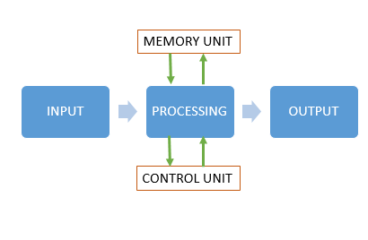

Een computer is een machine uit duizende verschillende onderdelen die samen een goed funktionerende machine moeten zijn die een taak moeten kunnen volbrengen. Denk aan bijvoorbeeld een laptop, die grafische output moet kunnen weergeven. Maar hoe handelt zo een maschine nou precies? De manier van hoe een computer handelt kun je vereenvoudigt vergelijken met het volgende stappenplan: invoer-verwerking-uitvoer.
Het eerste deel van het stappenplan is de input. De input is de informatie die de computer extern binnenkrijgt. Denk aan een toets die wordt ingedrukt op het toetsenbord. Met deze informatie moet de computer iets doen. Nu komt het tweede deel van het stappenplan aan bod:verwerking. De computer neemt de gegeven informatie en slaat deze op in een geheugen. Daarna verwerkt de computer de gegeven informatie met behulp van de provessor (CPU) en zet deze om naar bruikbare informatie. Tot slot geeft de computer de verwerkte informatie door naar onderdelen, zoals bijvoorbeeld een scherm en zorgt voor een output. De uitvoer geeft als het ware de invoer feedback. Je klikt de letter b op je toetsenbord, de computer verwerkt het en laat door uitvoer een b op het beeldscherm afbeelden.
